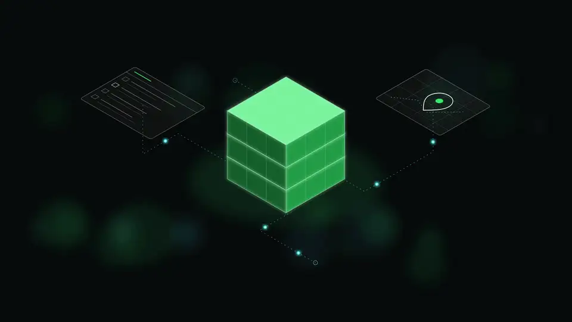

Oasis Globe
2025 — presentA customer request arrives over WhatsApp. A Twilio webhook hands it to an LLM-driven state machine that collects name, phone, address and issue, opens a ticket in Postgres behind row-level security, and routes it to a manager dashboard for technician assignment — sending a WhatsApp update at every step. Technicians work from a companion Android app.
Node 22
Express
Supabase / RLS
Twilio
Groq
React
Capacitor
25.6k LOC
109 commits
14 Android releases
CI on every push